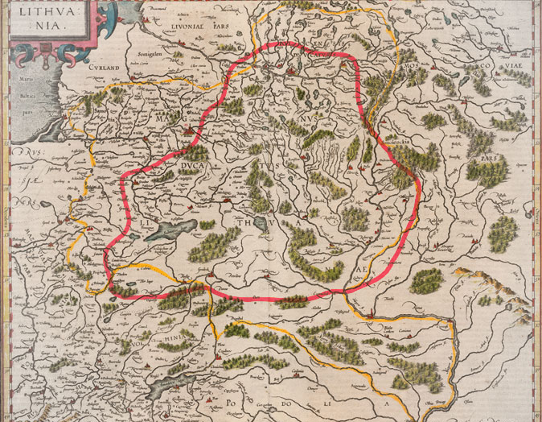
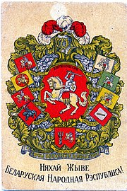

Возрождение
 Белорусский национальный дух, сформированный на протяжении веков, является основой нашей идентичности. Наша история восходит к временам Великого княжества Литовского, когда белорусские земли играли ключевую роль в создании одного из крупнейших государств в Европе. Именно ВКЛ и в последующем Речь Посполитая были самыми свободными, демократичными и сильными государствами континента.
 Именно тогда зародились традиции независимости, самоуправления и культурного многообразия, которые продолжают определять белорусскую нацию и сегодня. В XIX и начале XX века белорусы, несмотря на угнетение со стороны иностранных империй, сохранили свою культуру и стремление к свободе. Белорусские национальные деятели того времени боролись за признание нашей нации, языка и суверенитета. Важной вехой на этом пути стало провозглашение Белорусской Народной Республики в 1918 году — первой попытки создать независимое белорусское государство в новейшей истории. Хотя та республика просуществовала недолго, её наследие живёт в наших сердцах и вдохновляет нас на продолжение борьбы за свободу и независимость.
После Второй мировой войны Беларусь вновь оказалась под советским контролем, но и в этот период не утихала борьба за национальную идентичность. Диссидентские движения, культурные деятели и интеллектуалы того времени закладывали основы для возрождения независимого государства.
Путь к полной независимости был долгим и тернистым, но в 1991 году Беларусь вновь обрела свободу, став независимой страной после распада СССР. Однако вызовы, с которыми наша нация столкнулась с тех пор, требуют от нас объединения и готовности отстаивать наши права и ценности.
Наша партия черпает вдохновение из славного прошлого Беларуси, его героев и деятелей, которые сражались за свободу и самобытность нашей нации. Мы стремимся восстановить и укрепить наше национальное наследие, чтобы будущее Беларуси основывалось на свободе, справедливости и уважении к нашим историческим корням.
Партия «Возрождение» — это символ надежды и обновления для каждого гражданина Беларуси. Возрождение говорит не только о возвращении к нашим историческим и культурным корням, но и о новой главе в политической жизни страны, которая требует изменений, реформ и переосмысления.
Мы убеждены, что Беларусь стоит на пороге эпохи возрождения, где каждый человек будет иметь возможность стать частью этого процесса. Возрождение — это не просто реставрация прошлого, а строительство светлого и прогрессивного будущего, основанного на свободе, справедливости и национальном единстве.
Мы стремимся возродить:
Наша партия строит своё видение будущего Беларуси на прочных ценностях, которые отражают интересы и стремления белорусского народа. Мы верим, что только опираясь на эти принципы, возможно создать сильное, независимое и процветающее государство.
Национальный суверенитет и независимость Независимость Беларуси — основополагающий принцип нашей политики. Мы твёрдо убеждены, что только полностью суверенное государство может гарантировать своим гражданам свободное и достойное будущее. Мы будем отстаивать право Беларуси на собственный политический и экономический путь, свободный от внешнего давления и влияния.
Традиции и культурное наследие Мы глубоко уважаем белорусскую культуру, язык и историю. Поддержка и развитие белорусской культуры — это важнейшая задача нашей партии. Мы будем активно содействовать сохранению национального наследия и развитию белорусского языка как неотъемлемой части национальной идентичности.
Свобода и справедливость Свобода личности и верховенство закона — это основа нашего общества. Мы боремся за создание правового государства, в котором каждый гражданин будет защищён от произвола, а права и свободы каждого будут гарантированы и соблюдены. Все граждане Беларуси должны иметь равные возможности для самореализации, независимо от их социального или экономического положения.
Социальная солидарность и справедливое общество Мы выступаем за создание общества, где каждый человек чувствует поддержку и защиту. Экономическая политика нашей партии направлена на сокращение социального неравенства и обеспечение достойного уровня жизни для всех граждан. Мы будем отстаивать интересы рабочих, фермеров, предпринимателей и всех тех, кто созидает будущее нашей страны.
Сильная и ответственная государственная власть Мы выступаем за создание сильной государственной системы, которая служит народу и отвечает перед ним. Мы настаиваем на прозрачности и ответственности власти перед гражданами, а также на необходимости бороться с коррупцией, чтобы государство действительно работало на благо своих людей.
Национальное единство и солидарность Белорусская нация сильна своим единством и солидарностью. Мы призываем всех граждан, независимо от их политических убеждений, объединиться ради общего блага — процветания и независимости Беларуси. Взаимное уважение, диалог и сотрудничество должны стать основой национальной политики.
Ориентация на будущее и развитие Наша партия смотрит в будущее, видя Беларусь страной с развитой экономикой, инновациями и высоким уровнем жизни. Мы поддерживаем прогрессивные изменения в образовании, науке и технологиях, которые позволят Беларуси занять достойное место среди мировых лидеров.
Мы убеждены, что сочетание верности национальным традициям и стремления к новаторству обеспечит Беларуси устойчивое развитие и процветание на мировой арене.
Наш план направлен на создание сильной, независимой и процветающей Беларуси через последовательные реформы, которые затронут ключевые аспекты государственного управления, экономики, социальной сферы и гражданских прав. Приватизация экономики, сокращение государственного вмешательства и создание условий для частного предпринимательства — ключевые элементы этого плана.
1.1. Приватизация и рыночные реформы
1.2. Либерализация финансового сектора
1.3. Антимонопольное регулирование и защита конкуренции
2.1. Уменьшение бюрократии и цифровизация
2.2. Борьба с коррупцией
3.1. Пенсионная реформа
3.2. Реформа здравоохранения
3.3. Реформа образования
4.1. Независимая судебная система
4.2. Гражданские свободы и права человека
5.1. Энергетическая независимость
5.2. Экологические инициативы
6.1. Развитие международных связей и интеграция
Этот план реформ направлен на преобразование Беларуси в процветающее государство с сильной экономикой, защищёнными гражданскими правами и высоким уровнем жизни. Приватизация, сокращение государственного вмешательства и поддержка частного сектора являются важнейшими шагами на этом пути.